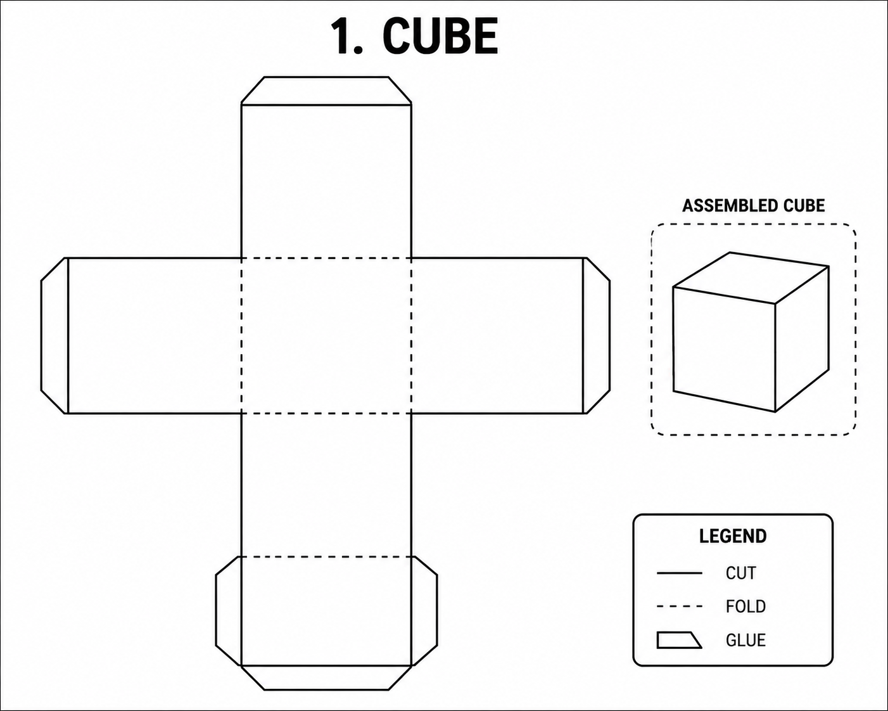

📅 Data de entrega: 27/07 · Assiste, aprende e faz as atividades!
Assista ao vídeo da história dos Três Porquinhos em inglês. Preste atenção nas palavras!
Essas palavras aparecem na história. Repita em voz alta!
Formas geométricas 3D em inglês. Encontre objetos parecidos em casa!
Desenhe e pinte as 3 casas dos porquinhos (straw, wood, brick) e o lobo. Escreva o nome de cada material em inglês ao lado.
Encontre 1 objeto em casa para cada forma 3D. Exemplo: uma bola = sphere. Anote em uma folha: "The ball is a sphere".
Pratique falando as palavras da lista de vocabulário. Se puder, grave um áudio de 30s falando os nomes das formas 3D em inglês.
Copie em uma folha:
Match the word to the picture:
1. Straw ____ (wolf / house / straw)
2. Wolf ____ (pig / wolf / brick)
3. Brick ____ (straw / wood / brick)
4. Blow ____ (build / blow / house)
Monte um cubo (cube) de papel! Cada lado do cubo deve ter UMA palavra do vocabulário da história escrita em inglês. Use as palavras: Pig, Wolf, House, Straw, Wood, Brick. Depois de montar, brinque de jogar o cubo e falar uma frase com a palavra que sair!
Essa folha foi entregue em sala para ajudar na tarefa.

📄 Página 154: Após montar o cubo de papel, responda os exercícios sobre formas geométricas 3D (cube, sphere, cylinder, cone, pyramid).
📄 Página 160: A criança deve observar a imagem da página e escrever no livro quais formas 3D ela consegue identificar. Exemplo: "I can see a sphere", "I can see a cube".
📌 Instruções para os pais:
📌 Não é tarefa — mas o ideal é que a criança assista pelo menos 1 por dia para fixar o vocabulário trabalhado em sala.